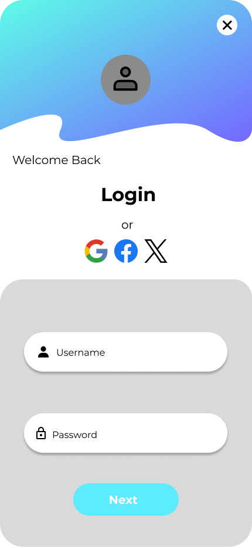
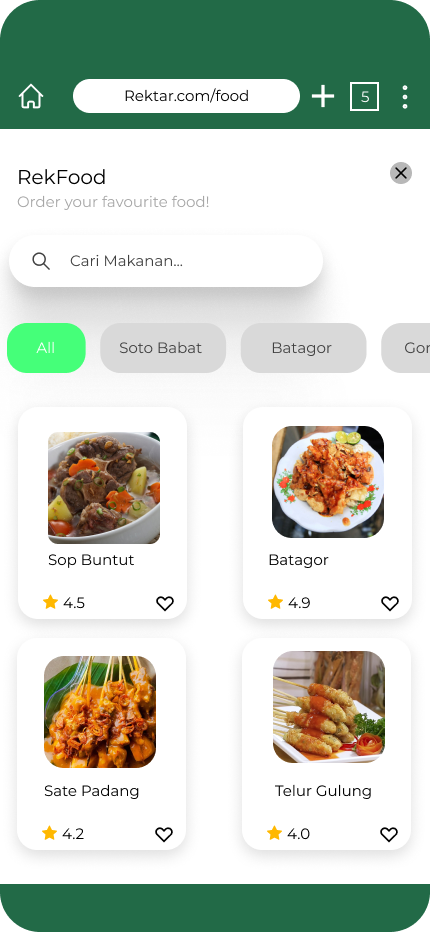
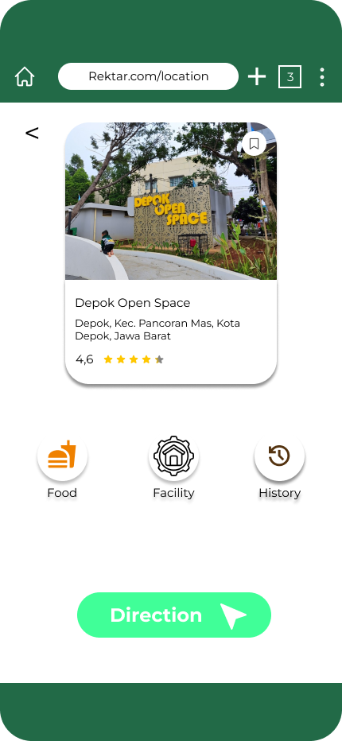
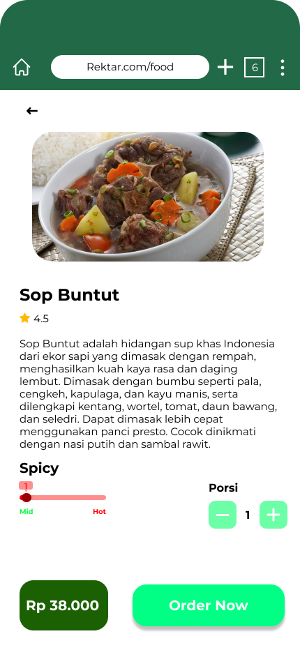

Rektar App Concept
A UI/UX concept for a restaurant discovery and culinary guide app.
Prototipe Interaktif
Anda bisa klik, scroll, dan berinteraksi dengan prototipe di bawah ini.
Tentang Proyek Ini
Rektar adalah sebuah konsep aplikasi yang dirancang untuk membantu pengguna menemukan tempat makan baru berdasarkan lokasi, ulasan, dan preferensi kuliner. Proyek ini mencakup alur pengguna mulai dari pendaftaran, pencarian, melihat detail restoran, hingga memberikan ulasan. Tujuannya adalah menciptakan platform yang mudah digunakan dan secara visual menarik bagi para pencinta kuliner.
Tampilan Lainnya




